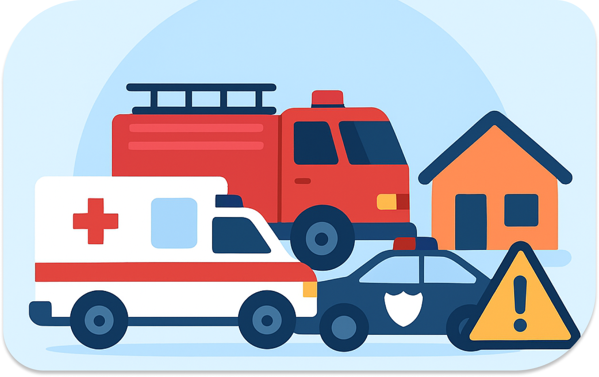

Precisa de Ajuda?
Aqui você encontra os principais serviços de emergência disponíveis no Brasil. Escolha o serviço desejado para mais informações.

O que fazer em caso de emergência?
Perguntas frequentes
O SAMU (192) deve ser acionado para emergências clínicas (infartos, AVC, crises convulsivas, trabalho de parto). Já os Bombeiros (193) são focados em traumas e resgates (acidentes de trânsito com vítimas presas nas ferragens, incêndios, afogamentos, choques elétricos e tentativas de suicídio).
Não é recomendado para não congestionar as linhas. O ideal é identificar o problema principal. Se você ligar para o número "errado" (por exemplo, ligar para o 190 em caso de incêndio), os atendentes são treinados para redirecionar sua chamada ou acionar a viatura correta via rádio.
Sim. Todas as chamadas para serviços de emergência (190, 192, 193) são gratuitas por lei. Elas funcionam mesmo sem crédito, e em muitos casos, até mesmo se o celular estiver bloqueado ou sem o chip da operadora (chamada de emergência apenas).
Sim, os números são padronizados nacionalmente: 190 (Polícia), 192 (SAMU) e 193 (Bombeiros). Ao ligar, o sistema de telefonia direciona sua chamada automaticamente para a central mais próxima da sua localização geográfica.
Passar trote aos serviços de emergência é crime previsto no Código Penal. Além de poder ser multado ou processado, você ocupa uma linha e uma viatura que poderiam estar salvando uma vida real naquele momento.